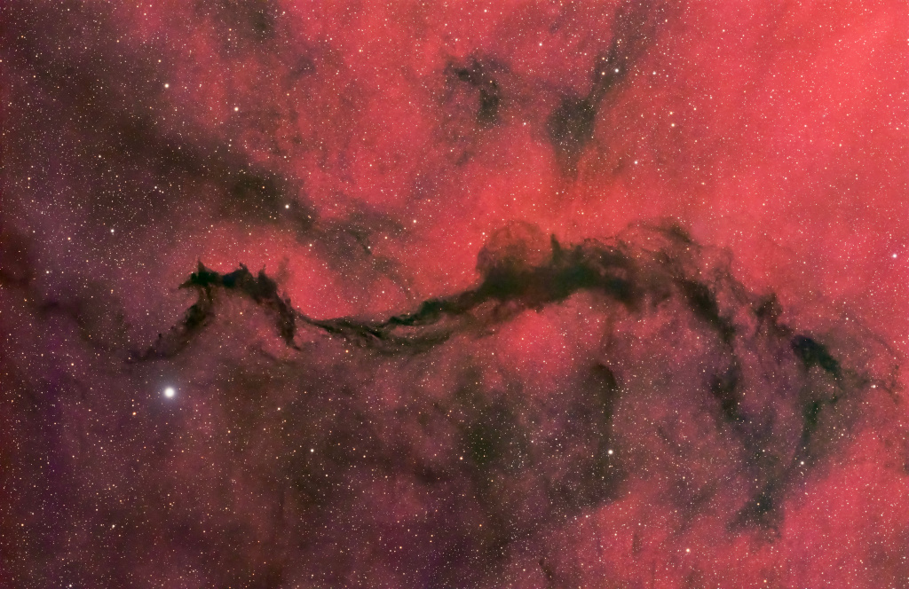
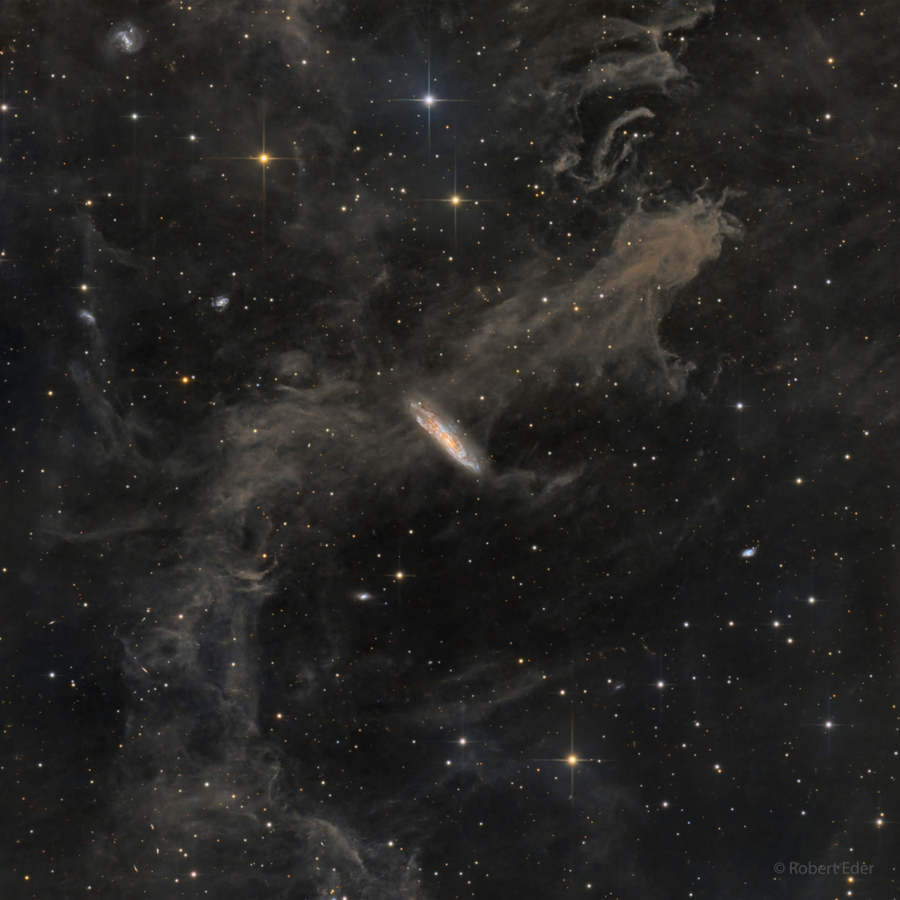
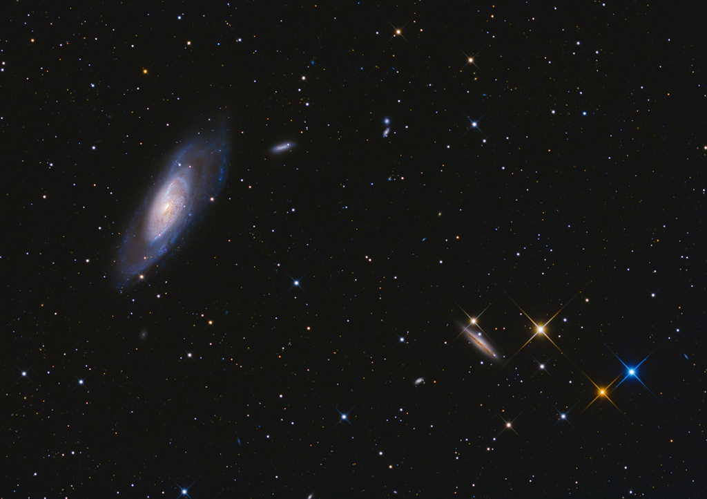
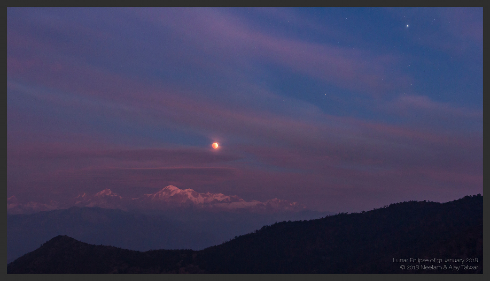
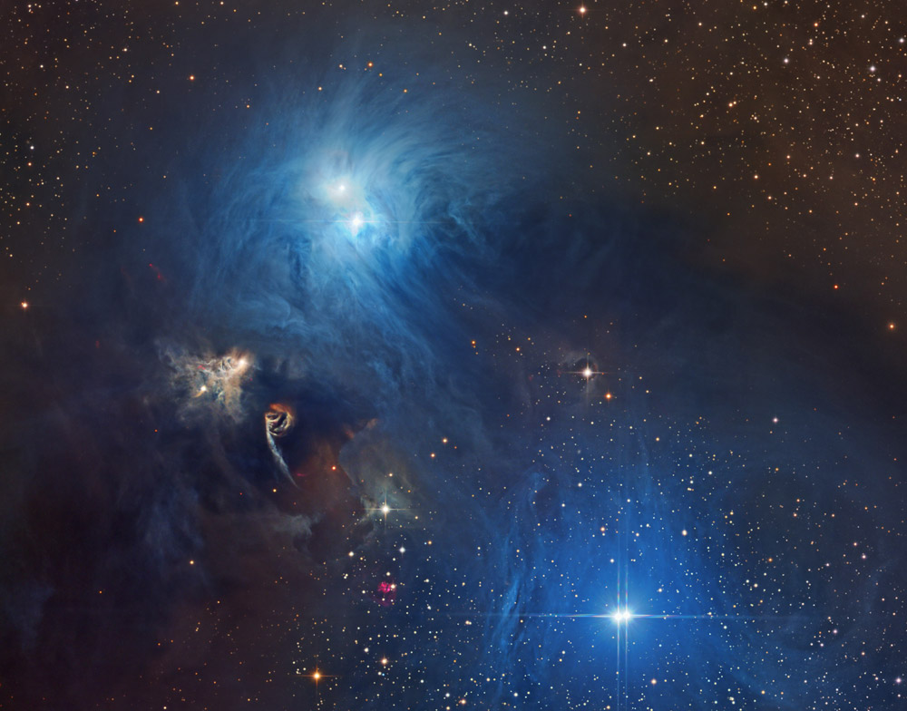

This website uses NASA's Astronomy Picture Of The Day API, which gives an associated picture from NASA's archive for each day from today back until June 16th, 1995. Feel free to save your favourites for later!
Jump To FavouritesNothing to see here yet! Please submit a date to see the Picture of the Day!

Date: 08 / 29 / 2025
Image Credit & Copyright: Katelyn Beecroft
Explanation: The diffuse hydrogen-alpha glow of emission region Sh2-27 fills this cosmic scene. The field of view spans nearly 3 degrees across the nebula-rich constellation Ophiuchus toward the central Milky Way. A Dark Veil of wispy interstellar dust clouds draped across the foreground is chiefly identified as LDN 234 and LDN 204 from the 1962 Catalog of Dark Nebulae by American astronomer Beverly Lynds. Sh2-27 itself is the large but faint HII region surrounding runaway O-type star Zeta Ophiuchi. Along with the Zeta Oph HII region, LDN 234 and LDN 204 are likely 500 or so light-years away. At that distance, this telescopic frame would be about 25 light-years wide.
Nothing to see here yet! Add some favourites to see some of the best Astronomy Pictures of the Day

This well-composed telescopic field of view covers over a Full Moon on the sky toward the high-flying constellation Pegasus. Of course the brighter stars show diffraction spikes, the commonly seen effect of internal supports in reflecting telescopes, and lie well within our own Milky Way galaxy. The faint but pervasive clouds of interstellar dust ride above the galactic plane and dimly reflect the Milky Way's starlight. Known as galactic cirrus or integrated flux nebulae they are associated with the Milky Way's molecular clouds. In fact, the diffuse cloud cataloged as MBM 54, less than a thousand light-years distant, fills the scene. The galaxy seemingly tangled in the dusty cloud is the striking spiral galaxy NGC 7497. It's some 60 million light-years away, though. Seen almost edge-on near the center of the field, NGC 7497's own spiral arms and dust lanes echo the colors of stars and dust in our own Milky Way.

Big, bright, beautiful spiral, Messier 106 dominates this cosmic vista. The nearly two degree wide telescopic field of view looks toward the well-trained constellation Canes Venatici, near the handle of the Big Dipper. Also known as NGC 4258, M106 is about 80,000 light-years across and 23.5 million light-years away, the largest member of the Canes II galaxy group. For a far far away galaxy, the distance to M106 is well-known in part because it can be directly measured by tracking this galaxy's remarkable maser, or microwave laser emission. Very rare but naturally occurring, the maser emission is produced by water molecules in molecular clouds orbiting its active galactic nucleus. Another prominent spiral galaxy on the scene, viewed nearly edge-on, is NGC 4217 below and right of M106. The distance to NGC 4217 is much less well-known, estimated to be about 60 million light-years, but the bright spiky stars are in the foreground, well inside our own Milky Way galaxy. Even the existence of galaxies beyond the Milky Way was questioned 100 years ago in astronomy's Great Debate.

This atmospheric picture of a distant horizon looks toward the tall Trisul peaks of India's snowy Himalayan mountains. Taken from a remote location on January 31, bright star Procyon shines at the upper right. The red Moon rising is gliding through Earth's shadow during the evening's much anticipated total lunar eclipse. Enjoyed across the planet's night side, the eclipse was the first of two total lunar eclipses in 2018, kicking off a good year for moonwatchers. But this was a rare treat. The eclipsed Moon also loomed large near perigee, the closest point in its orbit, during the second Full Moon of the month, also known as a Blue Moon. For the July 27, 2018 total lunar eclipse, the Full Moon will be very near apogee.

Cosmic dust clouds and young, energetic stars inhabit this telescopic vista, less than 500 light-years away toward the northern boundary of Corona Australis, the Southern Crown. The dust clouds effectively block light from more distant background stars in the Milky Way. But the striking complex of reflection nebulae cataloged as NGC 6726, 6727, and IC 4812 produce a characteristic blue color as light from the region's young hot stars is reflected by the cosmic dust. The dust also obscures from view stars still in the process of formation. At the left, smaller yellowish nebula NGC 6729 bends around young variable star R Coronae Australis. Just below it, glowing arcs and loops shocked by outflows from embedded newborn stars are identified as Herbig-Haro objects. On the sky this field of view spans about 1 degree. That corresponds to almost 9 light-years at the estimated distance of the nearby star forming region.
Astronomy Picture of the Day (APOD) is originated, written, coordinated, and edited since 1995 by Robert Nemiroff and Jerry Bonnell.
All the images on the APOD page are credited to the owner or institution where they originated. Some of the images are copyrighted and to use these pictures publicly or commercially one must write to the owners for permission. For the copyrighted images, the copyright owner is identified in the APOD credit line (please see the caption under the image), along with a hyperlink to the owner's location. NASA images are in the public domain, official guidelines for their use can be found here. For images credited to other owners/institutions, please contact them directly for copyright and permissions questions.